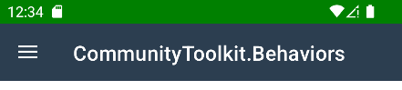

BlazorBindings.Maui - 1.0
This release is one of the biggest ones so far, and I have decided that BlazorBindings.Maui is stable enough for a 1.0 release! Take a look at Get Started page to check it out!
- New controls supported
- Behaviors
- BlazorBindingsApplication
- Root Wrapper
- Error Boundaries
- Entry is generic
- Other changes
- Breaking changes
- What's next?
New controls supported
This update brings the support to five more controls. That alse means that all Maui built-in controls are supported now (however, not all the functionality is supported for some controls yet). You can take a look at ControlGallery sample to find the examples of usage for those (and other) controls.
SearchBar
SearchBar is a user input control used to initiating a search.
<SearchBar @bind-Text="_searchQuery" @bind-Text:after="UpdateSearchResults" />
<CollectionView ItemsSource="_displayedItems" />
@code {
string _searchQuery;
string[] _displayedItems;
async Task UpdateSearchResults()
{
_displayedItems = await /* retrieve items */;
}
}

IndicatorView
IndicatorView is a control that displays indicators that represent the number of items, and current position, in a CarouselView.
<CarouselView IndicatorView="() => indicatorView">
<ItemTemplate>
...
</ItemTemplate>
</CarouselView>
<IndicatorView @ref="indicatorView"
HorizontalOptions="LayoutOptions.Center"
IndicatorColor="Colors.DarkGray"
SelectedIndicatorColor="Colors.LightGray" />
@code {
IndicatorView indicatorView;
}
SwipeView
SwipeView is a container control that wraps around an item of content, and provides context menu items that are revealed by a swipe gesture.
@foreach (var item in _items)
{
<SwipeView>
<RightItems>
<SwipeItems>
<SwipeItem BackgroundColor="Colors.Yellow"
Text="Favorite"
OnInvoked="() => MakeFavorite(item)" />
<SwipeItem BackgroundColor="Colors.Red"
Text="Remove"
IsDestructive="true"
OnInvoked="() => Remove(item)" />
</SwipeItems>
</RightItems>
<ChildContent>
<ContentView BackgroundColor="Colors.Green" Padding="8">
<Label>@item</Label>
</ContentView>
</ChildContent>
</SwipeView>
}

TableView
TableView displays a table of scrollable items that can be grouped into sections. A TableView is typically used for displaying items where each row has a different appearance, such as presenting a table of settings.
<TableView>
<TableRoot>
<TableSection Title="Cells examples">
<TextCell Text="Click me" Detail="Tapping makes something happen." OnTapped="OnCellTapped" />
<EntryCell Label="Enter your name:" @bind-Text="entryText" />
<SwitchCell Text="Click to toggle:" @bind-On="switchOn" />
</TableSection>
</TableRoot>
</TableView>
ListView
ListView displays a scrollable vertical list of selectable data items. While ListView manages the appearance of the list, the appearance of each item in the list is defined by a DataTemplate that uses a Cell to display items.
<ListView ItemsSource="items" SelectionMode="ListViewSelectionMode.None">
<ItemTemplate>
<ImageCell Text="@context.Name" Detail="@context.Type" ImageSource="@context.ImageUrl">
<ContextActions>
<MenuItem Text="Remove" IsDestructive="true" OnClick="() => RemoveItem(context)" />
</ContextActions>
</ImageCell>
</ItemTemplate>
</ListView>

Behaviors
While Behaviors concept is a bit foreign with Blazor, it is an important part of the Maui ecosystem, therefore this update brings the support for Behaviors. While there are no Behavior components provided out of the box, you can create bindings for the behaviors that you need using component generator. Here's the example for StatusBarBehavior from the MAUI Community Toolkit (you can take a look at the full sample here).
<ContentPage Title="CommunityToolkit.Behaviors">
<Behaviors>
<StatusBarBehavior StatusBarColor="Colors.Green" />
</Behaviors>
...
</ContentPage>

BlazorBindingsApplication
Previously, you had to use MauiBlazorBindingsRenderer instance to add BlazorBindings component to your application. However, MauiBlazorBindingsRenderer is not recommended to be used from the application code, as it is a low level implementation detail.
This release brings an easy to use BlazorBindingsApplication type, which accept your root component type as a generic argument.
You can inherit your App type from BlazorBindingsApplication, if you need to customize the Application in any way:
public class App : BlazorBindingsApplication<AppShell>
{
public App(IServiceProvider services) : base(services)
{
// Do whatever you need (e.g. add resources).
}
}
Or you can use this type directly in simple cases:
builder.UseMauiApp<BlazorBindingsApplication<AppShell>>();
Root Wrapper
Generally, BlazorBindings' renderer creates separate render trees for each page - that includes MainPage and navigations (both regular and modals). However, in some cases it might be useful to have a component, which wraps any rendered subtree - e.g. to define global cascading parameters, or to update all the pages on some theme changed.
Now it is possible to do that via BlazorBindingsApplication's WrapperComponentType property.
For instance, here's an example of a wrapping component Root.razor, which adds a global cascading value, and updates the UI based on some event:
@inject AppState AppState
<CascadingValue Value="123" Name="test">
@ChildContent
</CascadingValue>
@code {
[Parameter] public RenderFragment ChildContent { get; set; }
protected override void OnInitialized()
{
AppState.ThemeChanged += InvokeAsync(() => StateHasChanged());
}
}
Now, it is set as a wrapper component by overriding WrapperComponentType property:
public class App : BlazorBindingsApplication<AppShell>
{
public App(IServiceProvider services) : base(services) { }
public override Type WrapperComponentType => typeof(Root);
}
Error Boundaries
One of use cases for wrapper components is to allow to set a global error boundary. It allows to handle any exception, display a nice error page, and return back to the application (instead of simply crashing the application).
Note
Error boundaries do not allow you to ignore exceptions based on some conditions, and leave the user on a current page. Error boundary content is always replaced with an error content if any exception occurs.
Here's an example of such wrapper component:
<ErrorBoundary @ref="_errorBoundary">
<ChildContent>
@ChildContent
</ChildContent>
<ErrorContent>
<ContentPage Title="Error">
<VerticalStackLayout Margin="8" Spacing="8">
<Label Text="Oops!" HorizontalOptions="LayoutOptions.Center" FontSize="20" />
<Label Text="Unexpected error has occured:" />
<Label>@context.Message</Label>
<Button Text="Return" OnClick="Recover" />
</VerticalStackLayout>
</ContentPage>
</ErrorContent>
</ErrorBoundary>
@code {
[Parameter] public RenderFragment ChildContent { get; set; }
ErrorBoundary _errorBoundary;
void Recover() {
_errorBoundary.Recover();
}
}
Note
You'll need to create your ErrorBoundary type, implementing ErrorBoundaryBase. You can take a look here for an example.
Entry is generic
Entry component is generic now, which allows binding the value to non-string properties, like int or decimal.
<Label>Int entry: @_int</Label>
<Entry @bind-Text="_int" Keyboard="Keyboard.Numeric" />
@code{
int _int;
}
Note
While this change should not cause any troubles in most cases (since Blazor is able to infer generic argument from the @bind directive),
it still might cause compilation errors in some cases. You can add T="string" attribute value to resolve that.
Other changes
- Component Generator adds XML documentation now.
Breaking changes
- Due to some internal changes, components created via Component Generator have to be regenerated.
NativeControlComponentBase.ElementHandleris protected now.- Control components do not inherit
ComponentBaseanymore. - Default error page is removed. Application will crash in case of unhandled exceptions now.
MauiBlazorBindingsRendererdoes not support rendering the component to non-Application parent.- Some methods, which are not stable yet, have [RequiresPreviewFeatures] attribute now.
- Entry component is generic now (see above).
What's next?
- Shell URL navigation improvements.
- Supporting DataTemplateSelectors.
- Supporting Maps controls, which were added in MAUI for .NET 7.
- Improving the documentation.